Hello, I'm Joella.
I'm a graphic designer and photographer with a mission of creating meaningful designs that speak to brands' audiences.
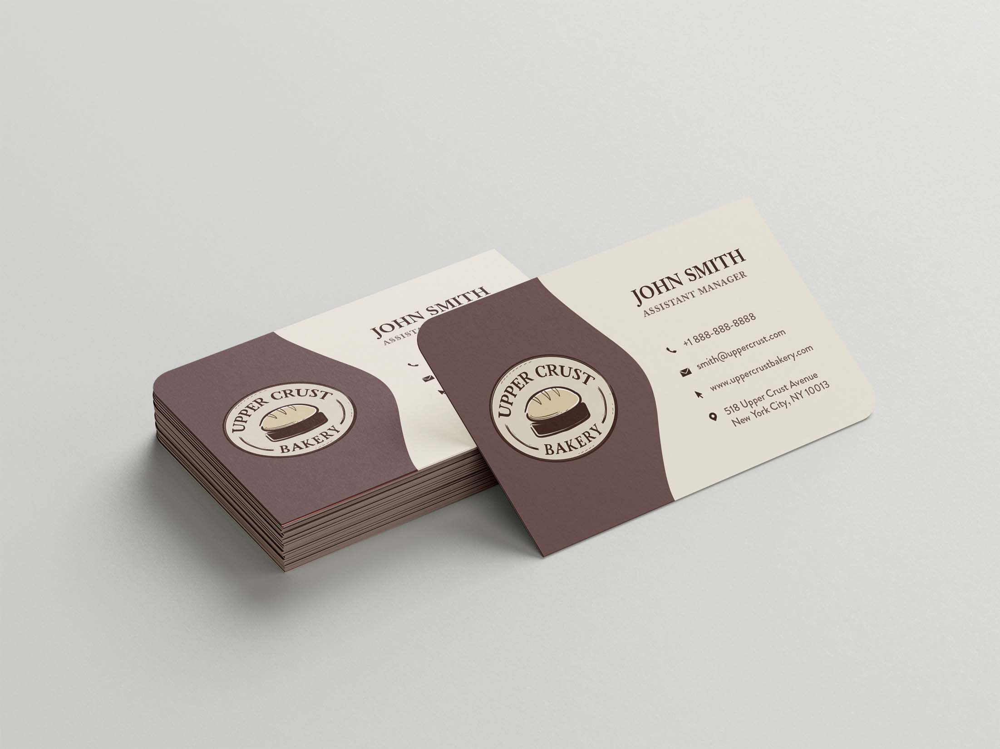
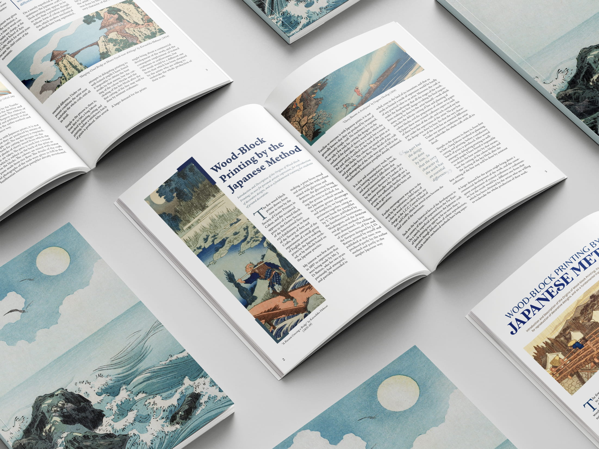
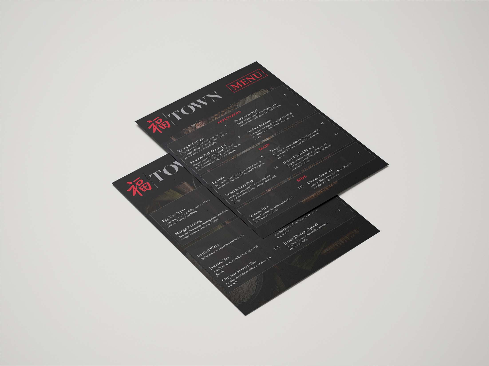
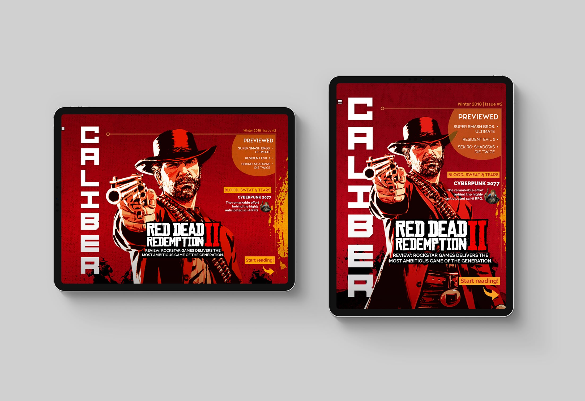
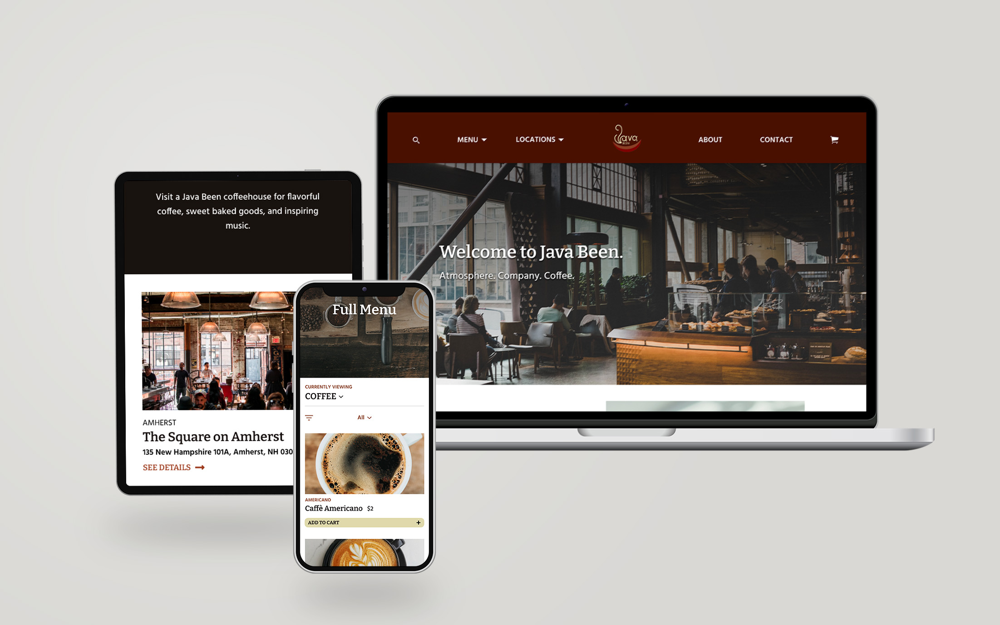
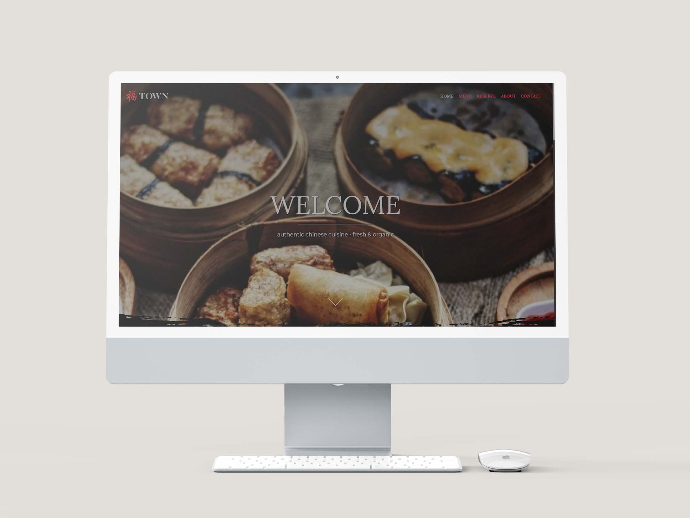
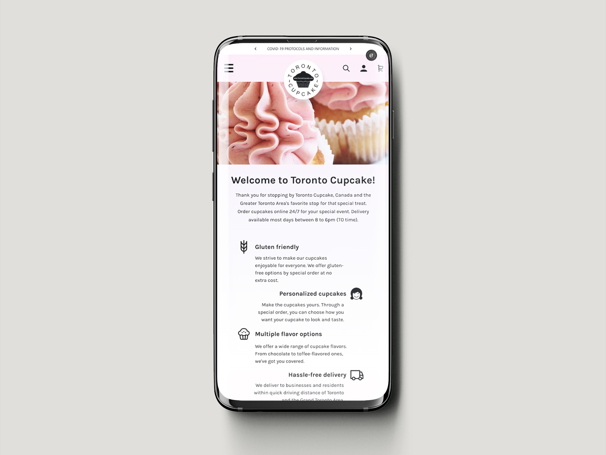
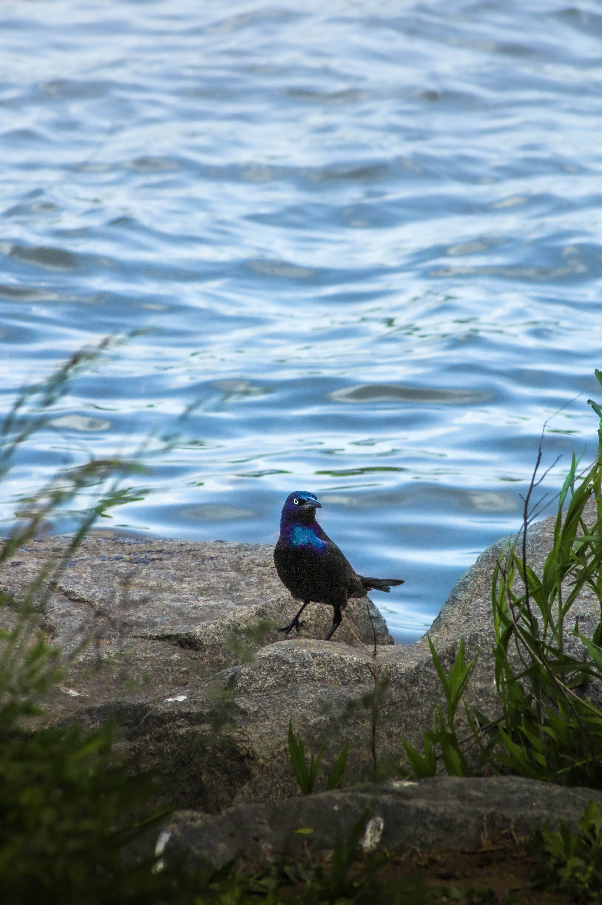
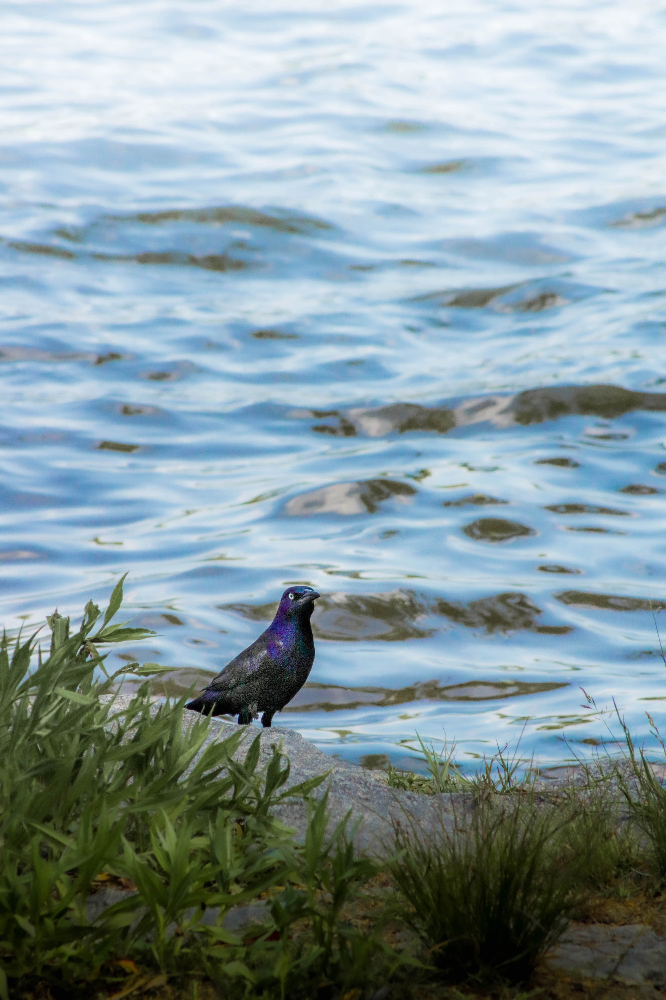
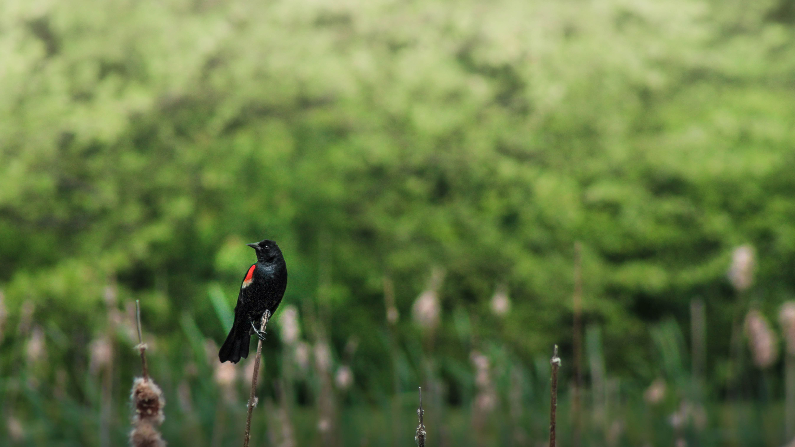

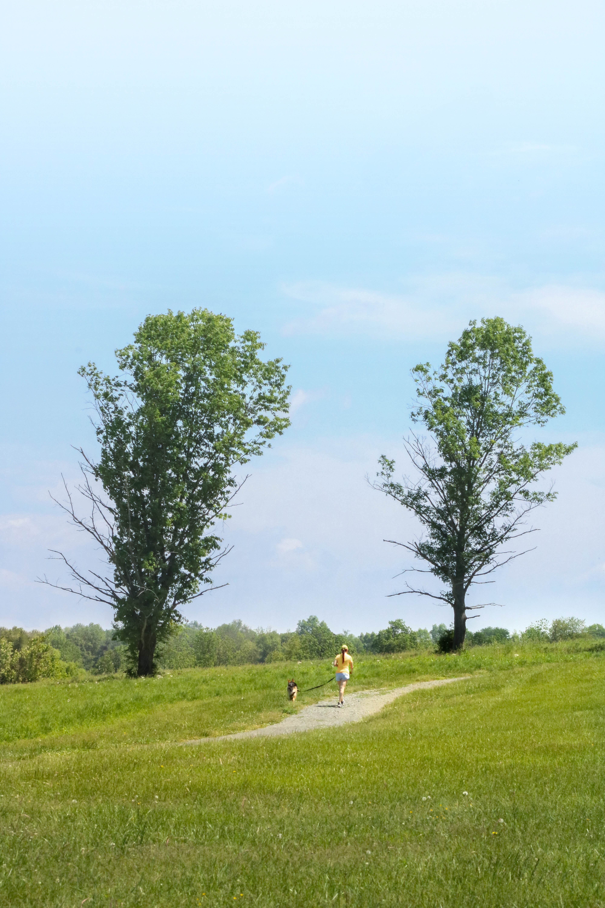

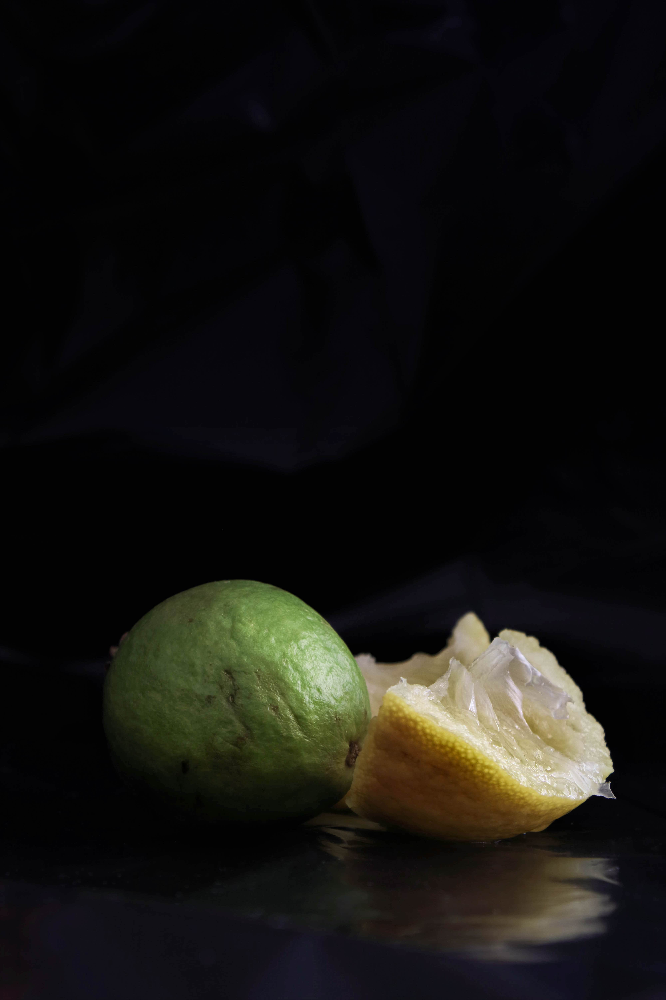
Who am I?
I'm Joella Chung, a recent graduate with a degree in graphic design with a concentration in web development and design. I also specialize in photography; I take pictures of people and nature.
When it comes to work, I'm passionate about expanding my skills, and I'm keen on employing creativity and innovative design.
You can find me on LinkedIn.